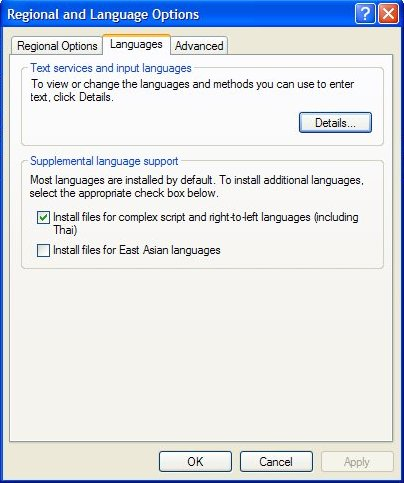

UNICODE FONTS: Incorrect font display might cause some problems in reading non-english pages. The application 'Talapatram' has been built using UNICODE support. It uses native UNICODE support that Windows provides.
All PCs, on which MS Office is installed, will have all Indian Language Unicode fonts installed on them. Microsoft ships all such fonts with MS Office (Eg., Gautami-Telugu, Mangal-Hindi). You should be able to see correct font display in 'Talapatram'. If there is any inconsistency in font display, follow the below simple procedure for possible solution.
In Windows XP go to Control Panel -> Regional and Language Options. Click on the tab Languages. Check the Check box saying 'Install files for complex script and right-to-left languages' Depending on your particular installation of windows it might ask for a setup CD or it can install necessary fonts from setup files' store on your local computer. Doing this, you should be able to see all Indian languages' text without any faults.
{kind=link}